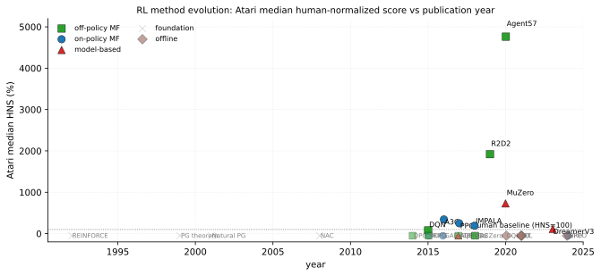

Policy optimization directly parameterizes and optimizes the policy function, contrasting with value-based methods that derive policies indirectly from learned value functions. The foundational policy gradient theorem (Richard S. Sutton et al. 1999) established that gradients of expected return can be estimated from trajectories without differentiating through environment dynamics, enabling optimization of stochastic policies with arbitrary function approximators. REINFORCE (Williams 1992) is the Monte-Carlo special case and remains the canonical illustration of the high-variance gradient estimator1 that every successor mitigates. The development of actor-critic methods then combined policy gradients (actor) with value-function estimation (critic) to reduce variance while maintaining unbiased gradient estimates, at the cost of credit assignment2 difficulties that long-horizon tasks aggravate.
The value-based lineage that DQN modernised begins a decade earlier and runs in parallel to the policy-gradient programme above. Sutton's temporal-difference learning (Richard S. Sutton 1988) introduced the bootstrap update that learns from incomplete sequences rather than waiting for episode termination as Monte Carlo methods do; Watkins's Q-learning (Watkins and Dayan 1992) is the off-policy variant that learns the optimal action-value function under any sufficiently-exploratory behaviour policy, with a tabular convergence proof that became the textbook foundation. The first scaled empirical demonstration was Tesauro's TD-Gammon (Tesauro 1995), a backgammon-playing neural network trained from self-play TD updates that reached world-championship strength with a single hidden-layer MLP and roughly 1.5M training games. TD-Gammon is the historical anchor for the entire deep-RL programme: it proved that bootstrap targets plus self-generated experience could exceed engineered evaluation functions, predating AlphaGo's same-template victory by two decades. Rainbow (Hessel et al. 2018) combined six independent DQN extensions (Double DQN, Prioritised Replay, Dueling networks, Multi-step returns, Distributional Q-learning, NoisyNets) and showed that the combination beats each individual component on Atari-57 median HNS, with ablation revealing Prioritised Replay and Multi-step returns as the two highest-impact additions; Rainbow's ablation methodology became the template for later combinatorial agent design (R2D2, Agent57), and the field's quiet observation is that the six-component bundle has not been displaced by any single subsequent value-based innovation, which is why the 2018 Atari-57 baseline still ships as a reference in 2024 benchmarks.
Early work on natural policy gradients (Kakade 2001) showed that following the steepest descent in distribution space rather than parameter space yields more stable optimization. The Natural Actor-Critic (Peters and Schaal 2008) combined natural gradients with temporal-difference learning, achieving parameter-independent updates suited for robotics. Trust Region Policy Optimization (TRPO) (Schulman et al. 2015) formalized this intuition with KL-divergence constraints guaranteeing monotonic improvement; Proximal Policy Optimization (PPO) (Schulman et al. 2017) simplified TRPO with a clipped surrogate objective that became the de facto on-policy default. Both inherit the on-policy sample inefficiency3 cost of discarding data each update.
For continuous control, deterministic policy gradients (Silver et al. 2014) enabled efficient off-policy learning by eliminating integration over the action space. Deep Deterministic Policy Gradient (DDPG) (Lillicrap et al. 2019) extended this to deep networks using experience replay and target networks from DQN (Mnih et al. 2015). Twin Delayed DDPG (TD3) (Fujimoto, Hoof, and Meger 2018) addressed overestimation bias via clipped double Q-learning, delayed policy updates, and target smoothing. Soft Actor-Critic (SAC) (Haarnoja et al. 2018) (Haarnoja et al. 2019) introduced maximum-entropy RL, encouraging principled exploration4 through entropy regularization while remaining off-policy. Off-policy variants pay an off-policy correction5 cost: importance ratios explode under policy mismatch and require either V-trace, Retrace, or implicit conservatism.
Sparse-reward tasks pose a distinct problem that the off-policy continuous-control methods above do not solve: when the reward signal is nonzero only at goal achievement, the replay buffer is dominated by failed trajectories from which no value learning occurs. Hindsight Experience Replay (Andrychowicz et al. 2017) addresses this by relabelling failed trajectories with an achieved state as if it had been the goal: every trajectory becomes a successful demonstration of reaching some goal, even if not the intended one, and the mechanism is straightforward (sample additional tuples with the goal replaced by a future state along the same trajectory). HER enables DDPG to solve manipulation tasks (robotic pushing, sliding, and pick-and-place with binary completion rewards) that fail entirely without it; a separate didactic bit-flipping environment demonstrates learning curves in the paper but is not the main claim. The skeptical reading is that HER is essentially a curriculum trick that exploits the goal-conditioned-MDP structure rather than a general-purpose algorithm: tasks without goal conditioning (Atari, locomotion) cannot use HER directly, and even within goal-conditioned regimes HER amplifies the data's nearest-state coverage bias rather than expanding it; the recipe nevertheless propagated to GoalGAN, RIG, and the broader sparse-reward goal-conditioned RL family without significant modification.
Distributed training scaled policy optimization to massive compute. A3C (Mnih et al. 2016) used asynchronous parallel actors for stable on-policy learning without replay buffers; IMPALA (Espeholt et al. 2018) decoupled acting and learning with V-trace off-policy correction, scaling to thousands of machines; R2D2 (Kapturowski et al. 2018) added recurrent state and prioritized replay; Agent57 (Badia et al. 2020) became the first agent to exceed human-level on all 57 Atari games via adaptive exploration-exploitation balancing. The model-based line (AlphaGo (Silver et al. 2016), AlphaZero (Silver et al. 2017), MuZero (Schrittwieser et al. 2020), DreamerV2/V3 (Hafner et al. 2022, 2023)) folds world-model learning into policy optimization, trading sample efficiency for hyperparameter brittleness6 and the sim-to-real gap7 when transferring to physical hardware. Long training runs additionally surface plasticity loss8, where late-stage networks can no longer absorb new tasks.
Recent work extends policy optimization to offline and language-model settings. Conservative Q-Learning (CQL) (Kumar et al. 2020) learns conservative value functions that lower-bound true values; Implicit Q-Learning (IQL) (Kostrikov, Nair, and Levine 2022) avoids out-of-distribution actions via expectile regression; Decision Transformer (Chen et al. 2021) recasts RL as sequence modeling. All three confront offline RL distribution shift9: behaviour-policy mismatch with the target. Direct Preference Optimization (DPO) (Rafailov et al. 2023) simplifies RLHF for language models by deriving a closed-form policy from an implicit reward model, eliminating reward shaping10 fragility that explicit reward models inherit.
The field has converged on: (1) trust-region or proximal methods for stable on-policy learning (PPO, GRPO), (2) maximum-entropy off-policy methods for sample-efficient continuous control (SAC, TD3), (3) distributed architectures for scale (IMPALA, R2D2, Agent57), (4) world-model methods for sample efficiency (MuZero, DreamerV3), and (5) conservative methods for offline learning (CQL, IQL, DPO). Implementation details often matter as much as algorithmic innovations (Engstrom et al. 2020), and the same applies to the evaluation protocol: (Agarwal et al. 2021) (NeurIPS 2021 Outstanding) showed that a typical 3-seed Atari/DMC benchmark sweep cannot statistically distinguish methods that differ by less than 10% in median return, recommended the interquartile mean (IQM) and optimality gap as primary metrics over mean/median, and provides stratified-bootstrap confidence intervals; their re-evaluation of canonical RL papers re-orders several method rankings, and the IQM+stratified-bootstrap protocol is now the de facto standard for any new deep-RL comparison.
| Atari | Continuous Control | Other | |||||||
| Method | Year | Algo class | Loss/Update | Domain | HNS | HalfCheetah-v2 | DMControl avg | Sample eff. | Wall-clock |
| REINFORCE (Williams 1992) | 1992 | on-policy MF | log- (MC, no baseline) | Cart-pole | - | - | - | - | - |
| PG theorem (Richard S. Sutton et al. 1999) | 1999 | on-policy MF | log- (compatible) | Theoretical | - | - | - | - | - |
| Natural PG (Kakade 2001) | 2001 | on-policy MF | , Tetris linear | Tetris | - | - | - | ~6000 lines | - |
| Deterministic PG (Silver et al. 2014) | 2014 | off-policy MF | (det.) | Octopus arm | - | - | - | - | - |
| Natural AC (Peters and Schaal 2008) | 2008 | on-policy MF | , LSTD-Q() | Robotics | - | - | - | ~200 ep. | - |
| DQN (Mnih et al. 2015) | 2015 | off-policy MF | Bellman-Q(=0.99), replay | Atari | 79 | - | - | 200M frames | 8 days GPU |
| GAE+TRPO (Schulman et al. 2018) | 2016 | on-policy MF | KL-TRPO(=0.01) + GAE(=0.96) | MuJoCo | - | ~4800 | - | 1M steps | ~1 day |
| TRPO (Schulman et al. 2015) | 2015 | on-policy MF | KL-TRPO(=0.01) CG+line-search | MuJoCo | - | ~4500 | - | 1M steps | ~1 day |
| A3C (Mnih et al. 2016) | 2016 | on-policy MF | log- + V-MSE, async | Atari | 344 | - | - | - | 4 days CPU |
| ACER (Wang et al. 2017) | 2017 | off-policy MF | trunc.IS + bias-correct, replay | Atari | - | - | - | - | - |
| ACKTR (Wu et al. 2017) | 2017 | on-policy MF | K-FAC , KL(=10) | MuJoCo | - | ~4900 | - | 1M steps | - |
| PPO (Schulman et al. 2017) | 2017 | on-policy MF | clip-PPO(=0.2), GAE(0.95) | MuJoCo+Atari | 250* | ~5800 | - | 1M steps | ~hours GPU |
| DDPG (Lillicrap et al. 2019) | 2015 | off-policy MF | Bellman-Q(=0.99), OU-noise | MuJoCo | - | ~3300 | - | 1M steps | - |
| TD3 (Fujimoto, Hoof, and Meger 2018) | 2018 | off-policy MF | clipped 2Q + delay(d=2) + target-smooth | MuJoCo | - | ~9500 | - | 1M steps | - |
| SAC (Haarnoja et al. 2019) | 2018 | off-policy MF | Bellman-Q + entropy(=auto) | MuJoCo+DMC | - | ~11000 | ~770 | 1M steps | - |
| IMPALA (Espeholt et al. 2018) | 2018 | off-policy MF | V-trace(=1, =1) | DMLab+Atari | 191.8 | - | - | 10B frames | hours, 1k CPUs |
| R2D2 (Kapturowski et al. 2018) | 2019 | off-policy MF | n-step Bellman + LSTM, prioritised replay | Atari | 1920 | - | - | 10B frames | 5 days, 256 actors |
| Agent57 (Badia et al. 2020) | 2020 | off-policy MF | NGU intrinsic + meta-controller | Atari | superhuman 57/57 | - | - | 80B frames | weeks, distrib. |
| AlphaGo Zero (Silver et al. 2017) | 2017 | model-based | MCTS(N=1600) + self-play CE | Go | - | - | - | 4.9M games | 40 days, 64 GPU |
| MuZero (Schrittwieser et al. 2020) | 2020 | model-based | MCTS(N=50) + learned dynamics | Atari+Go | 731 (mean) | - | - | 20B frames | 12 hours TPU |
| DreamerV3 (Hafner et al. 2023) | 2023 | model-based | RSSM world model + actor-critic in latent | Atari+DMC | 112* | ~9000 | ~822 | 100M frames | 1 day GPU |
| CQL (Kumar et al. 2020) | 2020 | offline | CQL(=1) lower-bound + Bellman-Q | D4RL+Adroit | - | 41.1 (medium)* | - | offline | - |
| IQL (Kostrikov, Nair, and Levine 2022) | 2021 | offline | expectile(=0.7) + AWR | D4RL | - | 47.4 (medium)* | - | offline | - |
| Decision Transformer (Chen et al. 2021) | 2021 | offline | seq-CE return-conditioned | D4RL+Atari | - | 42.6 (medium)* | - | offline | - |
| GRPO (Shao et al. 2024) | 2024 | on-policy | clip-PPO + KL + group-rel. baseline | LLM math | - | - | - | - | - |
| DPO (Rafailov et al. 2023) | 2024 | offline | Bradley-Terry implicit (=0.1) | LLM align. | - | - | - | offline | - |
The table groups the literature into five families, walked through chronologically below. Early foundations (REINFORCE, PG theorem, Natural PG, NAC) established the score-function gradient and natural-gradient geometry on tabular or linear policies, with high-variance MC estimators11 as the structural bottleneck their successors aim to fix. The trust-region / proximal family (TRPO, PPO, ACKTR, GRPO) is unusually persistent: nearly every major LLM-RL pipeline since 2017 uses some clipped or KL-penalized variant of PPO, including the GRPO that powers DeepSeek-R1. All are on-policy and pay the sample-inefficiency tax12 of discarding data each update, traded for monotonic-improvement guarantees and stability under hyperparameter changes.
The off-policy actor-critic family (DDPG, TD3, SAC) stratifies cleanly by overestimation control: DDPG is unstable from a single Q-network, TD3 fixes overestimation with clipped double-Q + delayed policy updates + target smoothing, and SAC adds maximum-entropy exploration13 under an automatically tuned temperature. All three rely on experience replay and an off-policy correction14 that DDPG/TD3 sidestep via deterministic policies and SAC handles via the soft Bellman backup. Continuous-control gains are dramatic: HalfCheetah-v2 reward at 1M steps climbs from DDPG's ~3,300 to TD3's ~9,500 to SAC's ~11,000.
The distributed line (A3C, IMPALA, R2D2, Agent57) chases throughput: A3C ran asynchronously on 16 CPU cores in 4 days; IMPALA scaled to 1k+ CPUs with V-trace correction15 decoupling actors from learners; R2D2 added recurrent state and prioritized replay to push Atari median HNS to 1,920%; Agent57 became the first agent superhuman on all 57 Atari games via adaptive Never-Give-Up intrinsic motivation. The plasticity loss16 hazard is most acute here: 80-billion-frame training runs routinely degrade learning capacity in late epochs.

The model-based and world-model line (AlphaGo, AlphaZero, MuZero, DreamerV2/V3) shifts the bottleneck from data to compute: MuZero wins Go, chess, shogi, and Atari with the same MCTS-on-learned-dynamics recipe; DreamerV3 reaches comparable Atari HNS on roughly two orders of magnitude fewer environment frames by training a Recurrent State-Space Model and rolling out actor-critic inside the latent imagination. The cost is hyperparameter brittleness17 across domain types and a sim-to-real gap18 that the world-model regularly fails to close on physical hardware.
The offline frontier (CQL, IQL, Decision Transformer, GRPO, DPO) shares a common abandonment of the on-policy data assumption; the methods diverge on how to address offline RL distribution shift19: CQL learns a conservative value function that lower-bounds the true , IQL avoids querying out-of-distribution actions via expectile regression and advantage-weighted regression, Decision Transformer return-conditions a sequence model, and DPO derives an implicit Bradley-Terry preference reward sidestepping reward shaping fragility20 altogether. GRPO sits between on-policy and offline: the rollouts come from the current policy but are pooled across a group of completions, eliminating the per-prompt critic.
The table separates five eras: foundations (1992-2008), trust-region / proximal (2015-2024), off-policy continuous control (2014-2018), distributed Atari (2016-2020), and offline + model-based (2020-2024). Three readings. First, the trust-region and proximal family is the most algorithmically conservative line in modern RL: the same clipping idea from PPO 2017 anchors GRPO 2024 and the RLHF training of every major instruction-tuned LLM. Second, the off-policy actor-critic family monotonically improves on the same HalfCheetah-v2 axis from DDPG (~3,300) to SAC (~11,000), a 3.3x gain over three years driven entirely by overestimation control and entropy regularization. Third, the model-based and offline lines compress the credit-assignment21 horizon by either learning a world model or by treating RL as supervised sequence modeling; both substantially reduce environment interaction at the cost of new failure modes (model exploitation, conservatism penalty, reward-model overfitting).
References
High-variance gradient estimator: REINFORCE Monte-Carlo gradient suffers extreme variance, scaling roughly linearly with horizon length and dominated by rare high-reward trajectories.↩︎
Credit assignment: long-horizon trajectories make per-step responsibility opaque; advantage estimation, eligibility traces, and bootstrapping only partially resolve which action caused which delayed reward.↩︎
On-policy sample inefficiency: TRPO and PPO discard data after each update because the surrogate objective requires the data-collection policy to match the optimization policy within a small trust region.↩︎
Exploration vs exploitation: -greedy, entropy bonus, intrinsic curiosity, and NGU's never-give-up mixture each address coverage of the state space, but no method is principled across reward sparsity regimes.↩︎
Off-policy correction: importance ratios explode when target and behaviour policies diverge; V-trace, Retrace, and clipping each trade variance for bias.↩︎
Hyperparameter brittleness: the same algorithm in a different domain often requires re-tuning learning rate, entropy coefficient, batch size, and target-network update rate; transferable defaults are scarce.↩︎
Sim-to-real gap: a policy that excels in simulation often degrades on real hardware due to actuator noise, contact dynamics, latency, and partial observability missing from the simulator.↩︎
Plasticity loss: late-stage RL networks empirically lose the capacity to learn new tasks; weight magnitudes saturate, dead ReLUs accumulate, and effective rank collapses.↩︎
Offline RL distribution shift: when the dataset's behaviour policy differs from the target policy, value-function bootstrapping queries actions outside the data support, producing arbitrarily large overestimation.↩︎
Reward shaping fragility: small reward changes can flip optimal policies; potential-based shaping is invariant by construction but rare in practice, and most production reward functions are hand-engineered and brittle.↩︎
High-variance gradient estimator: REINFORCE Monte-Carlo gradient suffers extreme variance, scaling roughly linearly with horizon length and dominated by rare high-reward trajectories.↩︎
On-policy sample inefficiency: TRPO and PPO discard data after each update because the surrogate objective requires the data-collection policy to match the optimization policy within a small trust region.↩︎
Exploration vs exploitation: -greedy, entropy bonus, intrinsic curiosity, and NGU's never-give-up mixture each address coverage of the state space, but no method is principled across reward sparsity regimes.↩︎
Off-policy correction: importance ratios explode when target and behaviour policies diverge; V-trace, Retrace, and clipping each trade variance for bias.↩︎
Off-policy correction: importance ratios explode when target and behaviour policies diverge; V-trace, Retrace, and clipping each trade variance for bias.↩︎
Plasticity loss: late-stage RL networks empirically lose the capacity to learn new tasks; weight magnitudes saturate, dead ReLUs accumulate, and effective rank collapses.↩︎
Hyperparameter brittleness: the same algorithm in a different domain often requires re-tuning learning rate, entropy coefficient, batch size, and target-network update rate; transferable defaults are scarce.↩︎
Sim-to-real gap: a policy that excels in simulation often degrades on real hardware due to actuator noise, contact dynamics, latency, and partial observability missing from the simulator.↩︎
Offline RL distribution shift: when the dataset's behaviour policy differs from the target policy, value-function bootstrapping queries actions outside the data support, producing arbitrarily large overestimation.↩︎
Reward shaping fragility: small reward changes can flip optimal policies; potential-based shaping is invariant by construction but rare in practice, and most production reward functions are hand-engineered and brittle.↩︎
Credit assignment: long-horizon trajectories make per-step responsibility opaque; advantage estimation, eligibility traces, and bootstrapping only partially resolve which action caused which delayed reward.↩︎